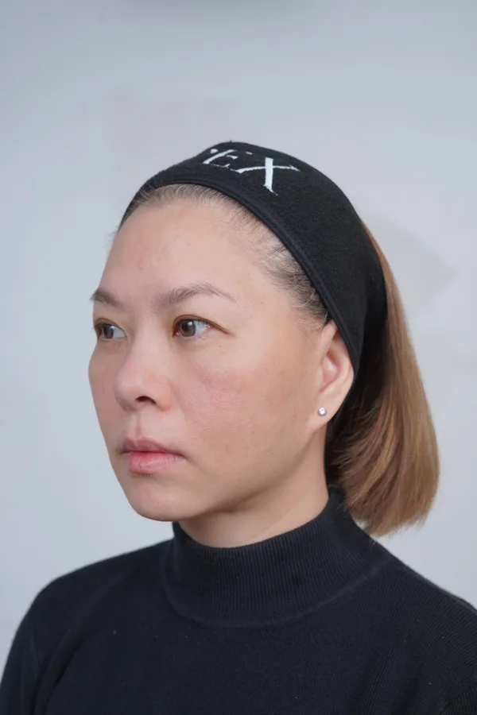

Treatments · Glow
Nucleofill
Nucleofill is a polynucleotide gel from Promoitalia in Milan. Its main ingredient is PDRN, and the gel works on the skin itself.
It comes in four gels, for the face, the skin around the eyes, the body and the scalp.
How it works
Nucleofill treats the skin, from the eyes down to the neck.

- I
The gel
A thick, purified polynucleotide gel, in a strength matched to the area.
- II
The technique
Your doctor places it in tiny drops across the skin, or at a few lifting points on the face.
- III
The skin
The maker says it hydrates and smooths the skin, and the Strong gel prompts collagen.
When another treatment fits better
- Volume and shapeFiller adds volume and changes shape, and Nucleofill works on the skin.See Filler
- Fat bags under the eyesThe Eyes gel isn't used on fat bags or puffy lower lids.
- An allergy to the gelTell your doctor about any allergy before you book.
Where it goes
Areas for Nucleofill
Face
- Whole faceMedium or Strong
- Cheeks and cheekbonesMedium or Strong
- Under-eyesEyes gel
- Around the eyesEyes gel
Body
- Neck
- Chest
- Back of the hands
- Scalp and browsHair gel
The maker also lists the belly, thighs and buttocks. Your doctor picks the gel and the areas.
Your visit
Step by step at the clinic
- I
The plan
Your doctor checks your skin and picks the gel and the areas.
- II
The gel
Medium for moisture and texture, Strong for firmness, Eyes for under the eyes.
- III
The injection
Tiny drops across the skin, or a few lifting points on the face.
- IV
The first two days
Bruising and swelling at the points settle in 1 to 2 days.
- V
The next session
A course is usually 2 to 4 sessions, 2 or 4 weeks apart.
What to expect
From the first day to the full result
- Day 1 to 2Bruising and swelling settle
- Week 2 to 4Next session
- After 2 to 4 sessionsThe course is done
- Month 6 to 12Time for a top-up


BeforeAfter
Apex results
Nucleofill before and after
Nucleofill at Apex. Drag the line across the photo to compare.
Individual results vary.
Prices
Nucleofill at Apex
| Gel | Made for |
|---|---|
| Nucleofill Medium, 1.5 ml | Moisture, texture and a light lift |
| Nucleofill Strong, 1.5 ml | The same, plus collagen and firmness |
| Nucleofill Eyes, 2 ml | Dark circles, tear trough and fine lines under the eyes |
| Nucleofill Hair, 2 ml | Thinning hair and brows |
Ask us for the Apex price on LINE @apexbeauty.
Before and after your visit
How to prepare and recover
Before you come
- Tell your doctorAny allergy, and which area bothers you most.
After you leave
Day 1 to 2- Bruising and swelling settle
Questions
What people ask us
How is it different from Vitaran?
Both are polynucleotide boosters. Vitaran comes from trout DNA and is made in Korea, and Nucleofill is a PDRN gel made in Italy.
How is it different from filler?
Its main ingredient is polynucleotide, and it works on the skin. Filler adds volume and shape.
How many sessions?
Usually 2 to 4 for the face, 2 or 4 weeks apart. The eyes start with 2 sessions 2 weeks apart.
How long does it last?
About 6 to 12 months for the face, depending on your age and lifestyle.
Sources
- Promoitalia, Nucleofill range, webpromoitalia.com/nucleofill-range
- Promoitalia UK, Nucleofill Medium, Strong, Soft Plus and Medium Plus product pages
- Fox Pharma (UK distributor), Nucleofill Eyes, Face and Hair protocols